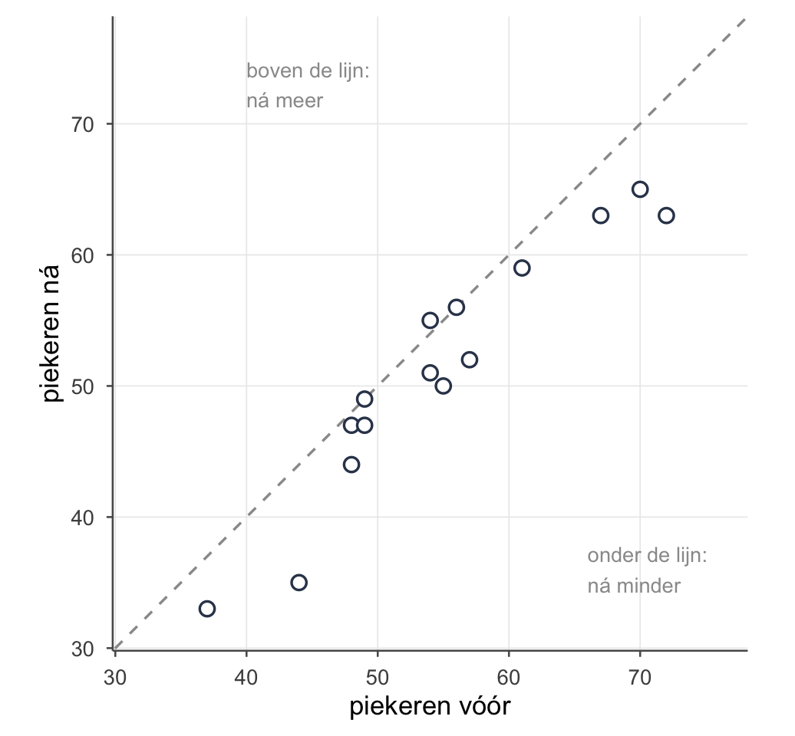
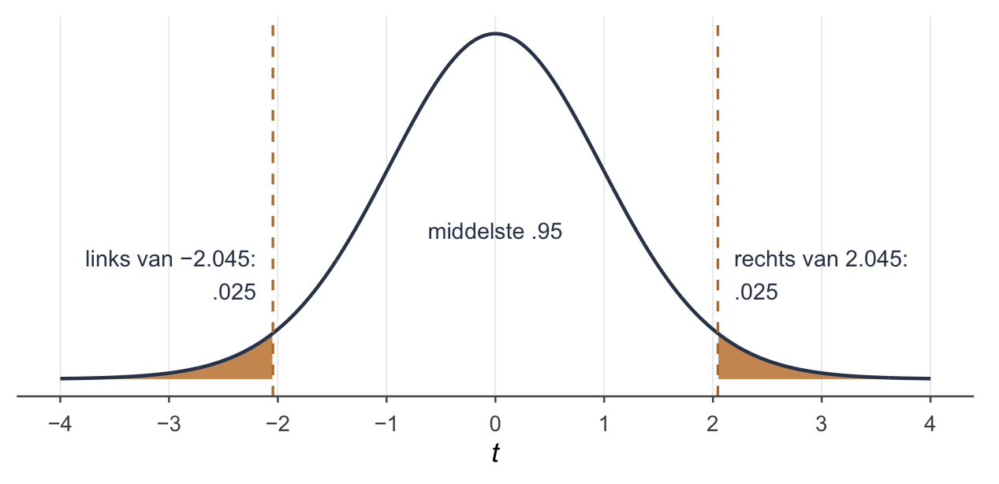
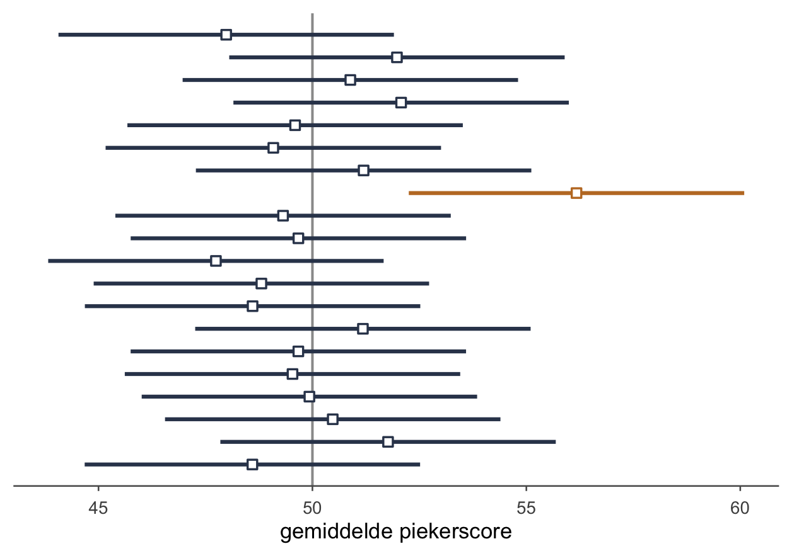
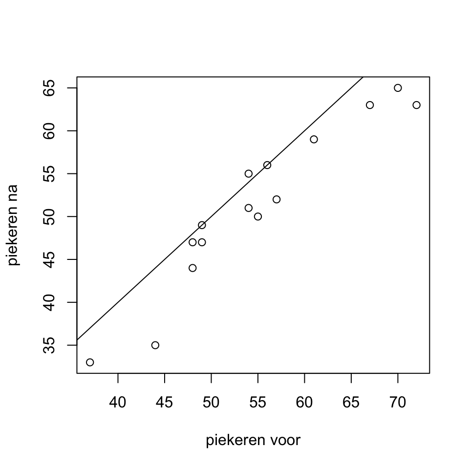
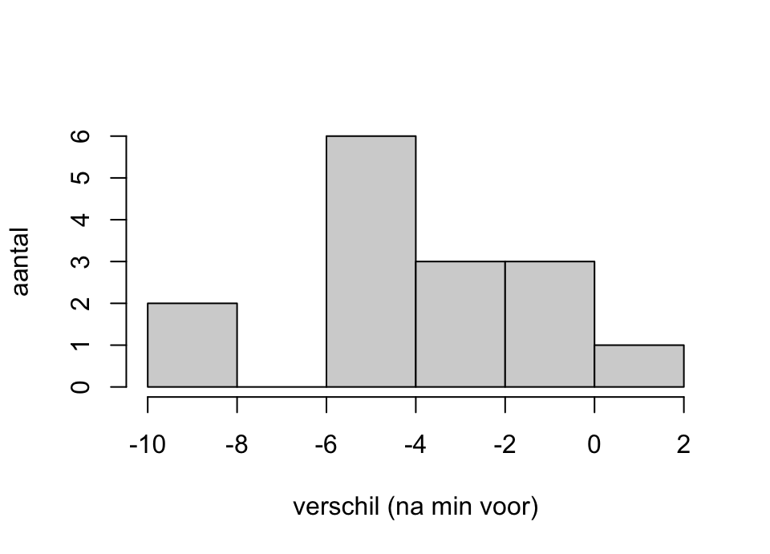
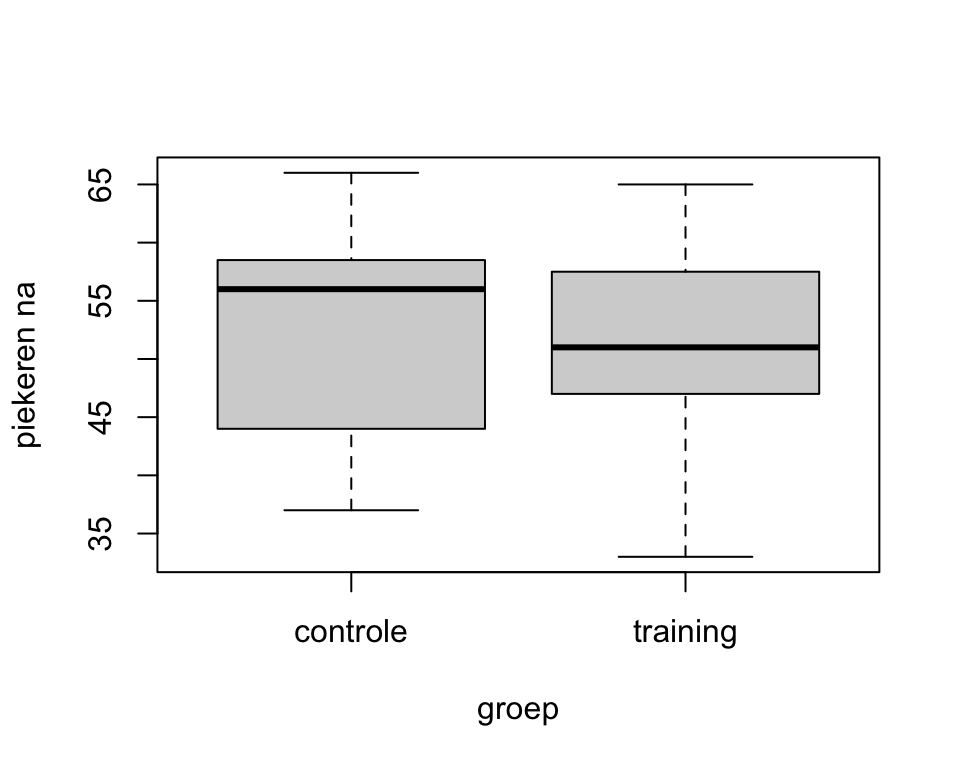

Week 3 · Hypothesetoetsen voor twee gemiddelden en betrouwbaarheidsintervallen
dezelfde mensen twee keer, of twee groepen — en een marge om je schatting
“Sinds de slaaptraining pieker ik minder dan de nachtvlinder,” zei de vleermuis.
“De nachtvlinder piekert altijd minder dan jij, daar is geen training voor nodig, alleen een nachtvlinder,” zei de zevenslaper, en dat ergerde de vleermuis.
“Jung schreef dat alles wat je aan een ander ergert, je iets over jezelf kan leren,” zei ze, “dus vergelijk jezelf eens met jezelf: vóór de training en erna.”
“Dan heb ik tenminste iemand die precies zo piekert als ik,” zei de vleermuis.
Wat je deze week leert
herkennen of twee gemiddelden bij dezelfde mensen horen of bij twee groepen
de gepaarde t-toets: eerst verschilscores, dan de toets van week 2
de onafhankelijke t-toets, in de versie van Welch
waarom je de gepoolde versie hier niet gebruikt, en wat de toets van Levene doet
het betrouwbaarheidsinterval: voor μ, voor een gepaard verschil en voor μ₁ − μ₂
wat de 95% van een 95%-interval wel en niet betekent
in R: t.test() gepaard en onafhankelijk, boxplot(), hist(), plot() met abline(), en qt()
Twee gemiddelden, twee soorten data
Tot nu toe leg je één gemiddelde naast één vast getal: piekeren slechte slapers anders dan 50? Deze week leg je twee gemiddelden naast elkaar.
Neem de oefendataset slaapstudie uit week 1: 30 eerstejaars die slecht slapen. De helft kreeg een slaaptraining, de andere helft niet. Van iedereen is het piekeren gemeten, vóór en ná. Twee vragen die je hiermee kunt stellen:
Piekert de trainingsgroep ná minder dan vóór? Dat zijn twee metingen bij dezelfde mensen. Dat heet gepaard: afhankelijke metingen (in het Engels paired samples).
Piekert de trainingsgroep ná anders dan de controlegroep? Dat zijn twee verschillende groepen mensen. Dat heet onafhankelijk (independent samples).
Het verschil zit niet in de getallen, maar in hoe ze bij elkaar horen. Stel jezelf één vraag: hoort deze score bij díé score, van dezelfde persoon of van een vast paar? Dan is het gepaard.
Twee manieren waarop twee gemiddelden bij elkaar horen
gepaard
onafhankelijk
wie
dezelfde mensen twee keer, of vaste paren
twee aparte groepen
voorbeelden
vóór en ná; tweelingen; partners in een stel
training en controle; studenten en niet-studenten
in je data
twee kolommen met scores naast elkaar
één kolom met scores, één kolom met de groep
de toets
de gepaarde t-toets
de onafhankelijke t-toets (Welch)
TipEen paar hoeft niet dezelfde persoon te zijn
Tweelingen van wie er één de training krijgt, of de twee partners in een stel: ook dat is gepaard. Bij elke score uit de ene rij hoort precies één score uit de andere rij. Bij twee losse groepen hoort de derde persoon in de trainingsgroep bij niemand in de controlegroep.
Gepaard: één kolom verschillen
De trainingsgroep: 15 mensen, elk twee keer gemeten. De truc van de gepaarde toets is dat je die twee metingen meteen terugbrengt tot één getal per persoon: het verschil.
De eerste vijf deelnemers van de trainingsgroep; er volgen er nog tien
persoon
vóór
ná
verschil d
1
54
51
−3
3
48
47
−1
4
54
55
1
7
67
63
−4
8
44
35
−9
…
…
…
…
De nummers zijn die uit de dataset; wie ertussen ontbreekt, zit in de controlegroep.
Vanaf hier heb je geen twee kolommen meer, maar één kolommetje verschillen. En op één kolom getallen kun je de toets uit week 2 loslaten: één gemiddelde, tegen nul.
De richting kies je zelf. Hier is het ná min vóór, dus een negatief verschil betekent: na de training minder gepiekerd. Andersom mag ook, dan draaien alle tekens om. Spreek het vooraf af en houd het vast.
Het gemiddelde van die verschillen heet (d-streep), en dat is precies het verschil tussen de twee gemiddelden: ná gemiddeld 51.27, vóór 54.73, dus = −3.47. Maar de standaardafwijking van de verschillen, , kun je níét uit de twee losse standaardafwijkingen halen. Daarvoor heb je de paren zelf nodig: is gewoon de standaardafwijking van de kolom verschillen (ook wel de standaarddeviatie). R rekent hem uit (sd()), en op een tentamen staat hij erbij. Hier is hij 2.973.

Figuur 1: De 15 deelnemers van de trainingsgroep. Elke stip is één persoon: links-rechts zijn piekerscore vóór, onder-boven die ná. Op de gestippelde lijn is ná gelijk aan vóór. Eronder liggen 12 stippen (ná minder gepiekerd), erop 2 en erboven 1.
Zie je in Figuur 1 hoe dicht de stippen bij de lijn liggen? Wie vóór veel piekerde, piekert ná ook veel. De mensen lopen onderling 35 punten uiteen, maar niemand schuift meer dan 9 punten van de lijn af. En bijna iedereen schuift dezelfde kant op: omlaag.
De hypothesen
Onder verandert er gemiddeld niets. Dan verwacht je een gemiddeld verschil van nul: brood bij de bakker. Niet in elke steekproef precies nul, want het toeval schuift altijd een beetje, maar in de populatie wel.
: — slechte slapers die de training volgen, piekeren ná gemiddeld evenveel als vóór
: — gemiddeld verandert er iets
is het gemiddelde verschil in de populatie: Grieks, want dat getal ken je niet. Je komt het ook tegen als δ (delta).
De toets
OpmerkingDe gepaarde t-toets
Met n het aantal paren: het aantal verschilscores, niet het aantal metingen.
Dat is de t-toets voor één gemiddelde uit week 2, op de kolom verschillen, met μ₀ = 0.
Is −3.467 veel? Dat weet je niet. Ruw is ruk: een verschil van drie punten kan groot zijn of klein, afhankelijk van hoeveel het toeval schuift. Dus vraag je: hoe vaak past de standaardfout, het lineaaltje, in dat verschil?
Eerst het lineaaltje:
Laat die vier decimalen staan tot het eind. Dan delen:
Het lineaaltje past er ruim vier keer in, naar beneden. De tweezijdige p-waarde haal je net als in week 2 uit de t-verdeling: één staart, maal twee. Dat mag omdat de t-verdeling symmetrisch is; de andere staart is precies even zwaar.
2*pt(-4.52, df =14)
[1] 0.0004804551
Dat is p < .001. Op een tentamen krijg je zo’n p erbij; zelf opzoeken hoeft niet. (Verderop rekent R met de onafgeronde t en komt op 0.0004839: hetzelfde, op de afronding van t na.)
Beslissen.p ≤ .05, dus je verwerpt de nulhypothese dat slechte slapers die de training volgen ná gemiddeld evenveel piekeren als vóór: dat is je statistische conclusie. In gewone woorden, je inhoudelijke conclusie: na de training piekeren de deelnemers gemiddeld anders dan ervoor; in deze steekproef 3.47 punten minder.
OpmerkingZo schrijf je het op
Het piekeren van de deelnemers verschilde tussen vóór en ná de training, t(14) = −4.52, p < .001; na afloop piekerden ze gemiddeld 3.47 punten minder.
WaarschuwingWerkt de training dus?
Dat zegt deze toets nog niet. Hij vergelijkt ná met vóór, bij dezelfde mensen. Maar piekeren kan ook zonder training dalen: de tentamenweek is voorbij, of wie bij de eerste meting extra hoog zat, zit de tweede keer vanzelf wat lager. Om de training te beoordelen heb je een groep nodig die géén training kreeg. Die komt aan het eind van deze week, in Werkt de training nu?.
OpmerkingControle in R — de gepaarde t-toets
In R kan het op twee manieren, en ze geven precies hetzelfde. Hoe je de trainingsgroep selecteert, staat in week 1, in In R: rijen kiezen.
training <- slaapstudie[slaapstudie$groep =="training", ]# 1. de twee kolommen, en R vertellen dat ze gepaard zijnt.test(training$piekeren_na, training$piekeren_voor, paired =TRUE)
Paired t-test
data: training$piekeren_na and training$piekeren_voor
t = -4.5163, df = 14, p-value = 0.0004839
alternative hypothesis: true mean difference is not equal to 0
95 percent confidence interval:
-5.113000 -1.820333
sample estimates:
mean difference
-3.466667
# 2. eerst de verschilscores, dan de toets voor één gemiddelde tegen 0training$verschil <- training$piekeren_na - training$piekeren_voort.test(training$verschil, mu =0)
One Sample t-test
data: training$verschil
t = -4.5163, df = 14, p-value = 0.0004839
alternative hypothesis: true mean is not equal to 0
95 percent confidence interval:
-5.113000 -1.820333
sample estimates:
mean of x
-3.466667
Allebei t = −4.5163, df = 14, net als met de hand. Ook het interval onderaan is hetzelfde; wat dat is, komt in Het betrouwbaarheidsinterval.
Onafhankelijk: twee groepen
Nu de tweede vraag: piekert de trainingsgroep ná afloop anders dan de controlegroep? Hier zijn geen paren. Persoon 1 in de trainingsgroep hoort bij niemand in de controlegroep. Je hebt twee losse groepen, elk met een gemiddelde en een standaardafwijking.
Piekeren ná afloop, per groep
groep
n
gemiddelde ná
1 training
15
51.267
9.468
2 controle
15
52.533
9.078
: — na afloop piekeren beide groepen gemiddeld evenveel
: — na afloop piekeren ze gemiddeld verschillend
Je kunt ook schrijven als . Dat is dezelfde uitspraak, en hij laat zien waar het om draait: een verschil, en of dat nul is.
De standaardfout van een verschil
Elke groep brengt zijn eigen onzekerheid mee. Het gemiddelde van groep 1 schuift van steekproef tot steekproef, dat van groep 2 ook, en het verschil schuift met allebei. De twee onzekerheden tel je op, maar niet zomaar: in het kwadraat. Elke breuk hieronder is een standaardfout uit week 2 in het kwadraat, want . Net als bij Pythagoras: de twee lineaaltjes zijn de rechthoekszijden, de standaardfout van het verschil is de schuine zijde.
Invullen. Eerst de kwadraten, dan de twee breuken, dan optellen, dan pas de wortel:
De toets
OpmerkingDe onafhankelijke t-toets (Welch)
De vrijheidsgraden rekent R uit; zie Welch, gepoold en Levene.
Waarom valt weg? Omdat je rekent in de wereld van , net als in week 1. Daar is nul, en nul aftrekken doet niets.
Het lineaaltje is hier 3.3867 punten, en het verschil is nog geen halve lineaal. R geeft er df = 27.95 bij, en dan is p = .71.
Beslissen.p > .05, dus je verwerpt de nulhypothese niet dat beide groepen na afloop gemiddeld evenveel piekeren. Na afloop is er tussen de groepen geen verschil aangetoond. Dat is iets anders dan “de groepen piekeren evenveel”: zie week 1.
OpmerkingZo schrijf je het op
Na afloop verschilde het piekeren niet significant tussen de trainingsgroep en de controlegroep, t(27.95) = −0.37, p = .71.
TipWaarom gepaard zoveel gevoeliger is
Neem de trainingsgroep nog eens, met hetzelfde verschil van −3.47. Doe nu alsof vóór en ná twee losse groepen zijn, en reken het lineaaltje van deze paragraaf uit:
als twee losse groepen: 3.4982, want de mensen verschillen onderling veel (de standaardafwijking is 9.69 vóór en 9.47 ná);
als paren: 0.7676, want elke persoon wordt met zichzelf vergeleken ( is maar 2.97).
Zelfde mensen, zelfde verschil, en een lineaal die ruim vier keer zo lang is. Als losse groepen is p = .33; als paren p < .001.
Wie veel piekert, piekert vóór én ná veel. In het verschil per persoon valt dat weg; tussen twee losse groepen blijft het staan, en verdrinkt een klein verschil erin. Je ziet het ook in Figuur 1: de stippen lopen van 37 tot 72, maar liggen allemaal dicht bij de lijn.
OpmerkingControle in R — de onafhankelijke t-toets
# één kolom scores, en na de tilde (~) de kolom met de groept.test(slaapstudie$piekeren_na ~ slaapstudie$groep)
Welch Two Sample t-test
data: slaapstudie$piekeren_na by slaapstudie$groep
t = 0.37401, df = 27.951, p-value = 0.7112
alternative hypothesis: true difference in means between group controle and group training is not equal to 0
95 percent confidence interval:
-5.671257 8.204590
sample estimates:
mean in group controle mean in group training
52.53333 51.26667
Kijk naar het teken. R zegt t = 0.37, jij rekende t = −0.37. R trekt de groepen af in de volgorde waarin ze staan, en die is alfabetisch: eerst controle, dan training. Dus R rekent controle min training, jij training min controle. Zelfde toets, zelfde df, zelfde p; alleen het teken draait om, en het interval spiegelt mee.
Bovenaan staat Welch Two Sample t-test: dat is de standaardinstelling van R.
Welch, gepoold en Levene
Er bestaan twee versies van de onafhankelijke t-toets. Hier gebruik je er één.
Welch (de toets hierboven, en de standaard in R) laat elke groep zijn eigen spreiding houden. De standaardfout is de wortel uit , zoals je net uitrekende. De vrijheidsgraden rekent R uit; de formule hoef je niet met de hand te kunnen. Herkennen wel, dus zo ziet hij eruit:
Wat je wél moet weten, is tussen welke twee grenzen de uitkomst ligt:
Bij de slaapstudie: tussen 14 en 28, en R gaf 27.95. Waar hij tussen die grenzen uitkomt, hangt af van de spreiding en de grootte van de twee groepen samen. Bij even grote groepen, zoals hier, is het eenvoudig: hoe meer de twee spreidingen verschillen, hoe verder de df zakt.
Zonder R neem je de ondergrens als df: de kleinste van en . Dat is de voorzichtige kant. Hoe minder vrijheidsgraden, hoe verder de grens (week 2), dus met de ondergrens komt je p iets hoger uit dan die van R, nooit lager. Verwerp je met de ondergrens, dan verwerpt R ook. Verwerp je niet, dan kan R in een randgeval nét wel verwerpen. In een verslag neem je de df van R over.
Gepoold (ook wel Student, of equal variances assumed) gebruik je hier niet, maar je moet hem herkennen:
hij neemt aan dat de twee groepen in de populatie even breed spreiden (gelijke varianties);
daarom voegt hij de twee varianties samen tot één, de gepoolde variantie: poolen is middelen;
zijn vrijheidsgraden zijn , een heel getal.
Waarom niet? Spreiden de groepen even breed, dan geeft Welch vrijwel hetzelfde. Spreiden ze ongelijk, dan kan gepoold een verkeerde p geven. Welch klopt dus in beide gevallen.
Bij de slaapstudie maakt het niets uit. De groepen zijn even groot, en dan is de gepoolde standaardfout precies die van Welch (3.3867); alleen de df verschilt (28 tegen 27.95). In opgave 3.3 zijn de groepen ongelijk, en daar scheelt het wél.
OpmerkingEn de toets van Levene?
Lees de naam, zoals hij in uitvoer staat: Levene’s test for equality of variances. Hij toetst of de twee groepen in de populatie even breed spreiden.
: — de varianties zijn gelijk
: — de varianties verschillen
Een kleine p bij Levene betekent dus: de spreidingen verschillen. Je komt hem tegen in uitvoer van andere programma’s, als keuzehulp tussen gepoold en Welch.
Maar zo’n voortoets is een slechte keuzehulp. Bij kleine groepen ziet hij een verschil in spreiding vaak niet, terwijl dat dan juist het meest uitmaakt. Bij grote groepen is hij al snel significant, terwijl het dan juist weinig uitmaakt. Met Welch hoef je niet te kiezen. Weet wat Levene toetst en wat zijn p zegt; meer hoeft niet.
Het betrouwbaarheidsinterval
In week 1 stond een belofte: welke waarden van μ laten je data nog wél toe? Een toets geeft één antwoord op één vraag: is μ gelijk aan 50, ja of nee. Een betrouwbaarheidsinterval geeft je in één keer alle waarden van μ die je data niet uitsluiten.
Terug naar de slechte slapers
Het piekervoorbeeld van week 1: een vragenlijst met = 10, en een steekproef van 25 slechte slapers. De standaardfout is dan . Stel je vindt = 53.
Je beste gok voor μ is 53: de puntschatting. Maar je weet dat 53 ernaast kan zitten, want een steekproefgemiddelde schuift. Dus zet je er een marge omheen: zoveel standaardfouten naar links, en zoveel naar rechts. Voor 95% zijn dat er 1.96.
OpmerkingHet interval voor μ, als je kent
(z-ster) is het aantal standaardfouten dat je wandelt: 1.645 bij 90%, 1.96 bij 95%, 2.576 bij 99%. Die drie ken je het best gewoon uit je hoofd. is de kritieke waarde uit week 1, nu als aantal standaardfouten; je ziet hem ook geschreven als . Het stuk heet de foutenmarge: zo ver ga je naar links en naar rechts.
Dat is het 95%-betrouwbaarheidsinterval: [49.08, 56.92]. Ligt 50 erin? Ja. Een populatie met μ = 50 past dus prima bij deze data, en daarom verwerp je : μ = 50 niet. Dat zeiden de stippen in week 1 ook, en de z-toets in week 2.
En bij = 55? Dan loopt het interval van 51.08 tot 58.92. Nu ligt 50 er niet in: je verwerpt de nulhypothese dat μ = 50.
Als je σx niet kent: t
Meestal ken je niet, en vul je de standaardafwijking uit je steekproef in. Dan wandel je geen standaardfouten, maar , uit de t-verdeling met . Die is iets groter: als je schat in plaats van weet, wordt alles een beetje breder.
OpmerkingHet interval voor μ, met t
is de kritieke t-waarde; je ziet hem ook geschreven als .
Neem alle 30 slechte slapers uit de slaapstudie, en hun piekerscore vóór de training: = 54.167, = 9.311.
Het interval is [50.69, 57.64]. Vijftig ligt er net buiten. Met = 1.96 had je [50.83, 57.50] gekregen: iets smaller, en dat is precies te smal, want je kende niet.
Waar die ligt, zie je in Figuur 2: het is de grens waar rechts nog .025 van de t-verdeling overblijft, en links van net zoveel. Samen .05 buiten, .95 ertussen.

Figuur 2: De t-verdeling bij df = 29. Tussen −2.045 en 2.045 ligt .95; in elke oranje staart .025. = 2.045 is de grens van de rechterstaart.
haal je in R met qt():
qt(0.025, df =29, lower.tail =FALSE)
[1] 2.04523
Je vraagt de t-waarde waar rechts nog .025 boven ligt: de helft van de .05 die buiten het 95%-interval valt. Met qt(0.975, ...) krijg je hetzelfde getal; dan vraag je wat er links onder ligt.
Wat 95% betekent: het hoefijzer
Dit is het lastigste stuk van de week.
Gooi een hoefijzer tegen een paal. Soms zit de paal ertussen, soms niet. Een interval is zo’n hoefijzer, en μ is de paal: hij staat stil, en jij weet niet waar. De 95% hoort bij het gooien: als je heel vaak een steekproef trekt en telkens zo’n interval maakt, vangen 95 van de 100 intervallen μ. Dat heel vaak trekken heet herhaalde steekproeftrekking.

Figuur 3: Twintig steekproeven van 25 slechte slapers, uit een populatie waarin μ = 50 (de grijze lijn). Elke streep is het 95%-interval van één steekproef, het blokje erin is zijn gemiddelde. Alle strepen zijn even lang, want en n liggen vast; alleen hun midden verschuift. Van de 20 strepen vangen er 19 μ; de oranje streep mist.
In Figuur 3 ken je μ, omdat de steekproeven verzonnen zijn. Dat er precies één mist, is toeval van deze twintig: een volgende reeks kan er geen of drie missen. Pas over heel veel reeksen wordt het één op de twintig. In echt onderzoek gooi je één keer, en zie je de paal niet. Je weet alleen dat jouw manier van gooien in 95% van de gevallen raak is.
OpmerkingDe betekenis van een 95%-betrouwbaarheidsinterval
Als je heel vaak een steekproef trekt en telkens zo’n interval maakt, dan bevat 95% van die intervallen de echte μ.
In gewone woorden zeg je: “met 95% betrouwbaarheid ligt μ tussen 49.08 en 56.92”. Het woord betrouwbaarheid doet daar het werk: het zegt iets over de methode, het gooien. Over dit ene interval valt geen kans meer te zeggen; het vangt μ, of niet.
Op een meerkeuzevraag kies je dus de herhaal-lezing (“als je heel vaak … dan bevat 95% van de intervallen μ”), als die ertussen staat. Je komt hem ook korter tegen, als “het gebied waarin μ in 95% van de gevallen ligt”. Dat is dezelfde lezing: “de gevallen” zijn de herhaalde steekproeven.
WaarschuwingDrie lezingen die niet kloppen
“95% van de slechte slapers scoort tussen 49.08 en 56.92.” Fout: het interval gaat over het gemiddelde μ, niet over losse mensen. Losse scores liggen veel breder (de steekproefverdeling uit week 1).
“De kans is 95% dat in het interval ligt.” Fout: is het midden van het interval. Hij ligt er altijd in.
“De kans is 95% dat μ in dít interval ligt.” Strikt genomen niet: μ staat stil en dit ene hoefijzer ligt eromheen of niet. De 95% hoort bij het gooien. Staat de herhaal-lezing tussen de opties, dan is die het goede antwoord.
Interval en toets zeggen hetzelfde
Je zag het al bij 53 en 55. Het geldt altijd, zolang interval en toets op dezelfde manier rekenen (dezelfde standaardfout, allebei met z of allebei met t) en je tweezijdig toetst:
ligt μ₀ in het 95%-interval, dan is p > .05 en verwerp je niet;
ligt μ₀ buiten het 95%-interval, dan is p ≤ .05 en verwerp je .
Bij een 99%-interval hoort α = .01, bij een 90%-interval α = .10. Het interval geeft je er gratis iets bij: hoe groot het verschil ongeveer is.
Breder of smaller
Drie knoppen bepalen hoe breed een interval is. Ze staan alle drie in de formule :
De betrouwbaarheid (). Wie zekerder wil zijn, gooit een breder hoefijzer.
De steekproefgrootte (n). Een grotere n maakt de standaardfout kleiner, en het interval smaller. Het gaat met de wortel: vier keer zoveel mensen geeft een half zo breed interval.
De spreiding (, of ). Hoe meer de scores uiteenlopen, hoe breder.
De eerste knop bij de slechte slapers, met = 53:
Hetzelfde gemiddelde, drie betrouwbaarheden
betrouwbaarheid
interval
breedte
90%
1.645
[49.71, 56.29]
6.58
95%
1.96
[49.08, 56.92]
7.84
99%
2.576
[47.85, 58.15]
10.30
De betrouwbaarheid heet ook wel de dekkingsgraad: welk deel van de hoefijzers raak is.
Het interval voor een verschil
Hetzelfde recept werkt voor de twee toetsen van deze week. Je zet de marge om het gevonden verschil, en kijkt of 0 erin ligt.
OpmerkingIntervallen voor een verschil
Gepaard, met :
Onafhankelijk, met de df van Welch:
Gepaard, de trainingsgroep. = 2.145 bij df = 14, en het lineaaltje was 0.7676:
Het interval is [−5.11, −1.82]. Nul ligt er niet in, net als de toets zei. En je ziet meteen hoe groot de daling ongeveer is: dalingen van 1.82 tot 5.11 punten passen bij deze data.
Onafhankelijk, training tegenover controle. = 2.0486 bij df = 27.95:
Het interval is [−8.20, 5.67]. Nul ligt erin. En kijk hoe breed het is: de trainingsgroep kan na afloop 8.20 punten minder piekeren dan de controlegroep, maar ook 5.67 punten meer. Niet significant betekent hier vooral: deze data weten het nog niet.
OpmerkingZo schrijf je een interval op
Het piekeren veranderde van vóór naar ná de training met gemiddeld −3.47 punten, 95%-BI [−5.11, −1.82].
OpmerkingControle in R — de intervallen
t.test() geeft het 95%-interval er altijd bij, onder 95 percent confidence interval. Een ander niveau vraag je met conf.level, en alleen de grenzen haal je eruit met $conf.int:
# het 95%-interval voor μ, piekeren vóór, alle 30t.test(slaapstudie$piekeren_voor)$conf.int
Het 90%-interval is smaller dan het 95%-interval [−5.11, −1.82]: minder zeker, dus een smaller hoefijzer.
Werkt de training nu?
Terug naar de vraag van het begin. De trainingsgroep piekert na afloop minder dan ervoor. Maar de controlegroep, die niets kreeg, ook een beetje: gemiddeld 1.07 punten, tegen 3.47 in de trainingsgroep.
De eerlijke vraag is dus: daalt de trainingsgroep méér dan de controlegroep? Neem van iedereen het verschil ná min vóór, en vergelijk die verschillen tussen de twee groepen. Er komt geen nieuwe toets bij: het is de onafhankelijke t-toets van hierboven, op de kolom verschil in plaats van op de kolom piekeren_na.
Ná min vóór, per groep
groep
n
gemiddeld verschil
training
15
−3.47
2.97
controle
15
−1.07
4.76
Het verschil tussen de groepen is −3.467 − (−1.067) = −2.400: de trainingsgroep daalt 2.40 punten meer. Het lineaaltje, met dezelfde formule als hierboven:
R geeft er df = 23.49 en p = .11 bij, en het 95%-interval voor het verschil in daling (training min controle) is [−5.39, 0.59].
Niet significant. Maar lees het interval: de trainingsgroep kan tot 5.39 punten méér dalen dan de controlegroep, maar ook 0.59 punten mínder. Met vijftien mensen per groep weet je het gewoon nog niet. Hoe je de grootte van zo’n effect van de training op het piekeren uitdrukt, en hoeveel mensen je nodig hebt om het te zien, komt in week 5 (Effectmaten en power).
Zie ook de vrijheidsgraden: 23.49, niet 28. De standaardafwijkingen van de verschillen lopen uiteen (2.97 tegen 4.76), en dan zakt de df van Welch.
In R: twee gemiddelden vergelijken
Deze week doe je in R drie dingen: de data bekijken in een plaatje, de toets uitvoeren, en het interval opvragen. Met slaapstudie, zoals in week 1:
## Inladen ----load("slaapstudie.RData")
Gepaard: twee kolommen naast elkaar
## De trainingsgroep ----training <- slaapstudie[slaapstudie$groep =="training", ]
Figuur 4: Piekeren vóór en ná in de trainingsgroep (n = 15). De mediaan zakt van 54 naar 51.
Die boxplot ziet de paren niet: hij zet twee groepen naast elkaar. Bij gepaarde data zegt een spreidingsdiagram (scatterplot) meer. Elk punt is één persoon, en de lijn abline(a = 0, b = 1) is de plek waar ná precies gelijk is aan vóór (a = 0: de lijn begint bij nul; b = 1: voor elke stap opzij één stap omhoog):
plot(training$piekeren_voor, training$piekeren_na,xlab ="piekeren voor", ylab ="piekeren na")abline(a =0, b =1)

Figuur 5: Piekeren vóór tegen ná in de trainingsgroep, met de lijn ná = vóór.
De meeste punten liggen onder de lijn: ná minder gepiekerd. Dan de toets:
## De gepaarde toets ----t.test(training$piekeren_na, training$piekeren_voor, paired =TRUE)
Paired t-test
data: training$piekeren_na and training$piekeren_voor
t = -4.5163, df = 14, p-value = 0.0004839
alternative hypothesis: true mean difference is not equal to 0
95 percent confidence interval:
-5.113000 -1.820333
sample estimates:
mean difference
-3.466667
Let op de volgorde: na eerst, dan voor. R rekent de eerste min de tweede.
En hoe liggen die verschillen verdeeld? Maak de kolom, en een histogram:
training$verschil <- training$piekeren_na - training$piekeren_voorhist(training$verschil, main ="", xlab ="verschil (na min voor)", ylab ="aantal")

Figuur 6: De 15 verschilscores (ná min vóór) van de trainingsgroep, van −9 tot 1.
De gepaarde toets gaat ervan uit dat de verschillen in de populatie ongeveer normaal verdeeld zijn. Wanneer dat ertoe doet, en wat je doet als het niet zo is, komt in week 6 (Assumpties en alternatieve toetsen).
WaarschuwingVergeet paired = TRUE niet
Zonder paired = TRUE denkt R dat je twee losse groepen hebt, en doet hij een Welch-toets. Bij deze data:
p = .33 in plaats van kleiner dan .001. Geen foutmelding, geen waarschuwing: gewoon een ander antwoord. Het is precies de som uit Waarom gepaard zoveel gevoeliger is: zonder paren telt R de verschillen tussen mensen weer mee.
Onafhankelijk: één kolom scores, één kolom groep
## Twee groepen ----# links van de tilde (~) de scores, rechts de groepboxplot(slaapstudie$piekeren_na ~ slaapstudie$groep, xlab ="groep", ylab ="piekeren na")t.test(slaapstudie$piekeren_na ~ slaapstudie$groep)
Welch Two Sample t-test
data: slaapstudie$piekeren_na by slaapstudie$groep
t = 0.37401, df = 27.951, p-value = 0.7112
alternative hypothesis: true difference in means between group controle and group training is not equal to 0
95 percent confidence interval:
-5.671257 8.204590
sample estimates:
mean in group controle mean in group training
52.53333 51.26667

Figuur 7: Piekeren ná afloop, per groep (15 controle, 15 training). De medianen: 56 en 51.
Typ de tilde zelf. Kopieer je hem uit een pdf, dan is het vaak een ander teken dat er alleen hetzelfde uitziet, en krijg je een foutmelding.
Het interval opvragen
## Een ander niveau, en alleen de grenzen ----t_uit <-t.test(slaapstudie$piekeren_na ~ slaapstudie$groep, conf.level =0.99)t_uit$conf.int
Met t_uit$ kun je ook $statistic (t), $parameter (df; R noemt de vrijheidsgraden een parameter van de t-verdeling) en $p.value opvragen. Typ ?t.test en kijk onder Value voor de hele lijst.
Oefenen
OpmerkingOpgave 3.1 — Begrippen
Wat zijn en bij de onafhankelijke t-toets? En bij de gepaarde?
Hoeveel vrijheidsgraden heeft de gepaarde t-toets? En tussen welke twee grenzen ligt de df van Welch?
Geef de formule van de toetsstatistiek voor de gepaarde en voor de onafhankelijke t-toets.
Waarom kun je in de formule van de onafhankelijke t-toets bijna altijd weglaten?
Wat betekent de 95% van een 95%-betrouwbaarheidsinterval voor μ? Geef de formele betekenis.
Geef de formule van het 95%-interval voor μ (met t), en die voor .
OpgeletAntwoord 3.1
Onafhankelijk: : tegenover : . Gepaard: : tegenover : , met het gemiddelde verschil in de populatie.
Gepaard: , met n het aantal paren. Welch: minstens de kleinste van en , hoogstens . De precieze waarde rekent R uit, met de formule in Welch, gepoold en Levene. Zonder R neem je de ondergrens.
Gepaard en onafhankelijk:
Je rekent in de wereld van , en daar is , dus .
Als je heel vaak een steekproef trekt en telkens zo’n interval maakt, dan bevat 95% van die intervallen de echte μ. De 95% hoort bij de methode, niet bij één interval.
Voor μ en voor :
De eerste met , de tweede met de df van Welch.
OpmerkingOpgave 3.2 — Gepaard of onafhankelijk?
Welke toets hoort erbij: de gepaarde t-toets, de onafhankelijke t-toets, of geen van beide?
Twintig mensen doen een reactietest, één keer uitgerust en één keer na een nacht zonder slaap.
Dertig studenten psychologie en dertig studenten rechten vullen een stressvragenlijst in.
Van vijftien tweelingen krijgt telkens één van de twee een leestraining, de ander niet. Daarna lezen ze allebei een tekst.
In veertig stellen geven beide partners een cijfer voor hoe tevreden ze zijn met de relatie. Verschillen mannen en vrouwen daarin?
Veertig mensen worden door loting over twee diëten verdeeld. Na acht weken weeg je iedereen.
Vijfentwintig kinderen maken een rekentoets waarvan het landelijk gemiddelde 100 is. Wijken ze daarvan af?
OpgeletAntwoord 3.2
Gepaard. Dezelfde mensen, twee keer.
Onafhankelijk. Twee groepen, niemand zit in allebei.
Gepaard. Elke tweeling is een vast paar: bij elke score met training hoort precies één score zonder.
Gepaard. Elke man hoort bij één vrouw, zijn partner. Dat zie je makkelijk over het hoofd, omdat het wel over mannen en vrouwen gaat.
Onafhankelijk. Twee groepen door loting, geen paren.
Geen van beide. Eén gemiddelde tegen een vast getal: de t-toets voor één gemiddelde uit week 2.
OpmerkingOpgave 3.3 — De telefoon in een andere kamer
Een onderzoeker wil weten of een telefoon op tafel het leren beïnvloedt. Ze verdeelt studenten door loting over twee groepen. Groep 1 legt de telefoon in een andere kamer, groep 2 houdt hem op tafel (geluid uit). Iedereen leert twintig minuten een tekst en maakt daarna een toets van 40 vragen. Ze weet niet of de telefoon het leren beter of slechter maakt.
Aantal goede antwoorden, per groep
groep
n
gemiddeld goed
1 telefoon weg
14
28.1
4.2
2 telefoon op tafel
18
23.6
6.4
Schrijf en op.
Welke toets hoort hierbij?
Bereken de standaardfout van het verschil.
Bereken t.
R geeft df = 29.29. Tussen welke twee grenzen moest die liggen?
R geeft p = .023. Wat is je beslissing (α = .05), en wat is je conclusie in gewone woorden?
Bereken het 95%-interval voor . Gebruik = 2.044.
In R krijg je t = −2.39. Hoe kan dat?
Met de gepoolde toets zou t = 2.27 zijn. Waarom is dat anders, en welke gebruik je?
OpgeletKort antwoord 3.3
: ; : .
De onafhankelijke t-toets (Welch).
1.8803.
t = 2.39.
Tussen 13 en 30.
Verwerpen. Met en zonder telefoon op tafel scoren studenten gemiddeld verschillend; in deze steekproef scoort de groep zonder telefoon hoger.
[0.66, 8.34].
R trekt de groepen alfabetisch af: tafel min weg.
Gepoold neemt aan dat beide groepen in de populatie even breed spreiden. Dat weet je niet, en 4.2 tegen 6.4 maakt het niet aannemelijk. Welch heeft die aanname niet nodig.
OpgeletVolledige uitwerking 3.3 — stap voor stap
De hypothesen:
: — met en zonder telefoon op tafel scoren studenten gemiddeld even goed
: — ze scoren gemiddeld verschillend
Tweezijdig, want de onderzoeker weet niet welke kant het op gaat.
Twee groepen door loting, niemand zit in allebei: de onafhankelijke t-toets, in de versie van Welch.
Eerst de kwadraten, dan de twee breuken, dan optellen, dan de wortel:
Het verschil gedeeld door het lineaaltje:
De ondergrens is de kleinste van = 13 en = 17, dus 13. De bovengrens is = 30. R zit er netjes tussen: 29.29.
.023 ≤ .05, dus je verwerpt de nulhypothese dat studenten met en zonder telefoon op tafel gemiddeld even goed scoren. Wie de telefoon in een andere kamer legde, had gemiddeld 4.5 vragen meer goed. In APA: t(29.29) = 2.39, p = .023.
Het verschil, plus en min lineaaltjes:
Dus [0.66, 8.34]. Nul ligt er niet in, net als de toets zei. Een voordeel van de telefoon in een andere kamer van 0.66 tot 8.34 vragen past bij deze data.
R zet de groepen op alfabet. Heet de ene groep tafel en de andere weg, dan rekent R tafel min weg, en dat is 23.6 − 28.1 = −4.5. Zelfde toets, zelfde p, ander teken.
De gepoolde toets voegt de twee varianties samen, alsof beide groepen in de populatie even breed spreiden. Hier zijn de groepen ongelijk groot en spreiden ze ongelijk (4.2 tegen 6.4), en dan geeft poolen een andere standaardfout. Je gebruikt Welch: die klopt ook als de spreidingen verschillen.
OpmerkingOpgave 3.4 — Een week zonder sociale media
Een groep van 20 studenten vult op maandagochtend een stemmingsvragenlijst in (hoger is een betere stemming). Daarna zetten ze een week lang alle sociale media uit, en op vrijdagmiddag vullen ze de lijst opnieuw in. Per student reken je het verschil uit: ná min vóór. Gemiddeld is dat verschil = 1.9, met = 4.6.
Schrijf en op.
Waarom is dit een gepaarde toets?
Bereken de standaardfout, t en df.
R geeft p = .080. Wat is je beslissing (α = .05)?
Bereken het 95%-interval voor . Gebruik = 2.093.
Een andere onderzoeker rekent vóór min ná. Wat verandert er aan , t, p en het interval?
Stel dat de toets wél significant was geweest. Mag je dan zeggen dat een week zonder sociale media de stemming verbetert?
OpgeletKort antwoord 3.4
: ; : .
Dezelfde studenten zijn twee keer gemeten.
SE = 1.0286; t = 1.85; df = 19.
Niet verwerpen.
[−0.25, 4.05].
, t en het interval wisselen van teken; p blijft gelijk.
Nee, er is geen groep die de sociale media aanhield.
OpgeletVolledige uitwerking 3.4 — stap voor stap
De hypothesen:
: — gemiddeld is de stemming ná net zo goed als vóór
: — gemiddeld verandert de stemming
Bij elke score ná hoort precies één score vóór, van dezelfde student. Je werkt dus met één kolom verschillen.
Het lineaaltje, dan t:
.080 > .05, dus je verwerpt de nulhypothese niet dat de stemming ná gemiddeld net zo goed is als vóór. Er is geen verandering aangetoond; dat betekent niet dat er geen verandering is.
Het verschil, plus en min lineaaltjes:
Dus [−0.25, 4.05]. Nul ligt erin, net als de toets zei. De stemming kan er een beetje op achteruit zijn gegaan, maar ook 4.05 punten op vooruit.
Alle verschillen draaien om, dus wordt −1.9, t wordt −1.85 en het interval [−4.05, 0.25]. De p blijft .080: tweezijdig maakt de kant niet uit.
Nee. Je weet alleen dat de stemming aan het eind van de week anders was dan aan het begin. Dat kan ook door iets anders komen: het weekend dat eraan komt, het weer, of dat wie op maandag somber is, op vrijdag vanzelf wat opknapt. Daarvoor heb je een vergelijkingsgroep nodig, net als bij de slaapstudie.
OpmerkingOpgave 3.5 — Intervallen met de hand
Een geheugentest is zo gemaakt dat de standaardafwijking in de populatie = 12 is. Je neemt hem af bij 36 studenten, en die scoren gemiddeld = 64.
Bereken de standaardfout.
Bereken het 95%-interval voor μ.
Bereken ook het 90%- en het 99%-interval. Welke is het breedst, en waarom?
Toets : μ = 60 tweezijdig met α = .05, alleen met je interval. Verwerp je? En met α = .01?
Stel dat je níét kent, en 12 de standaardafwijking uit je steekproef is. Dan is = 2.030 (df = 35). Bereken het 95%-interval opnieuw. Wat zegt het nu over μ = 60?
Hoeveel studenten heb je nodig voor een 95%-interval dat half zo breed is?
Welke uitspraak over het 95%-interval uit b klopt?
95% van de studenten scoort tussen 60.08 en 67.92.
De kans is 95% dat tussen 60.08 en 67.92 ligt.
Als je heel vaak 36 studenten trekt en telkens zo’n interval maakt, bevat 95% van die intervallen μ.
μ ligt zeker tussen 60.08 en 67.92.
OpgeletKort antwoord 3.5
De standaardfout is 2.
[60.08, 67.92].
90%: [60.71, 67.29]; 99%: [58.85, 69.15]. Het 99%-interval is het breedst.
Bij α = .05: verwerpen. Bij α = .01: niet verwerpen.
[59.94, 68.06]; 60 ligt er nu in, dus niet verwerpen.
Vier keer zoveel: 144.
Uitspraak C.
OpgeletVolledige uitwerking 3.5 — stap voor stap
.
, dus het interval is [60.08, 67.92].
Alleen verandert:
90%: , dus [60.71, 67.29];
99%: , dus [58.85, 69.15].
Het 99%-interval is het breedst (10.30 tegen 6.58). Wie zekerder wil zijn dat hij μ vangt, moet een breder hoefijzer gooien.
Bij α = .05 kijk je naar het 95%-interval: 60 ligt er net onder, dus je verwerpt de nulhypothese dat μ = 60. Bij α = .01 kijk je naar het 99%-interval: 60 ligt erin, dus dan verwerp je de nulhypothese dat μ = 60 niet.
, dus [59.94, 68.06]. Nu ligt 60 er wél in: niet verwerpen. Dezelfde data, een andere beslissing, alleen omdat je niet kende. is groter dan , want wie schat in plaats van weet, moet breder gooien.
De breedte gaat met . Nu is . Half zo breed vraagt een twee keer zo grote , dus 12, en . Kort: een twee keer zo grote , dus een vier keer zo grote n: 144 studenten.
C. A gaat over losse studenten, niet over μ. B gaat over , en die ligt altijd in het midden van zijn eigen interval. D is te stellig: ook een 95%-interval mist soms.
OpmerkingOpgave 3.6 — In R
Gebruik slaapstudie.
Selecteer de controlegroep, en maak een kolom verschil: ná min vóór. Wat is het gemiddelde verschil?
Maak een spreidingsdiagram van vóór tegen ná, met de lijn ná = vóór. Hoeveel punten liggen onder de lijn?
Doe de gepaarde t-toets in de controlegroep. Geef t, df en p, en je conclusie.
Vraag voor de trainingsgroep het 90%- en het 99%-interval van het gepaarde verschil op. Welk is breder? Ligt 0 erin?
OpgeletAntwoord 3.6
## a. de controlegroep, en het verschil ----controle <- slaapstudie[slaapstudie$groep =="controle", ]controle$verschil <- controle$piekeren_na - controle$piekeren_voormean(controle$verschil)
[1] -1.066667
## b. het plaatje, en tellen ----plot(controle$piekeren_voor, controle$piekeren_na,xlab ="piekeren voor", ylab ="piekeren na")abline(a =0, b =1)sum(controle$verschil <0)
[1] 9
## c. de gepaarde toets ----t.test(controle$piekeren_na, controle$piekeren_voor, paired =TRUE)
Paired t-test
data: controle$piekeren_na and controle$piekeren_voor
t = -0.86827, df = 14, p-value = 0.3999
alternative hypothesis: true mean difference is not equal to 0
95 percent confidence interval:
-3.701532 1.568199
sample estimates:
mean difference
-1.066667
## d. de trainingsgroep, 90% en 99% ----t.test(training$piekeren_na, training$piekeren_voor, paired =TRUE, conf.level =0.90)$conf.int
Figuur 8: Piekeren vóór tegen ná in de controlegroep (antwoord 3.6b).
−1.07: ook de controlegroep piekert ná iets minder.
9 van de 15; 1 ligt erop en 5 erboven.
t(14) = −0.87, p = .40. Je verwerpt de nulhypothese niet dat de controlegroep ná gemiddeld evenveel piekert als vóór.
90%: [−4.82, −2.11]; 99%: [−5.75, −1.18]. Het 99%-interval is breder. In allebei ligt 0 niet: ook bij α = .01 verwerp je de nulhypothese voor de trainingsgroep.
Tentamenblok
Zo kun je het op een tentamen tegenkomen: meerkeuze met vier opties, een getal invullen, of ja of nee. Een p-waarde of een die je nodig hebt, staat erbij.
OpmerkingVraag 1 — meerkeuze
Onderzoekers meten bij 50 stellen hoeveel uur per week elke partner aan huishoudelijk werk besteedt. Ze willen weten of vrouwen daar gemiddeld meer tijd aan besteden dan mannen. Welke toets past?
de onafhankelijke t-toets, want mannen en vrouwen zijn twee groepen
de gepaarde t-toets, want elke man hoort bij één vrouw
de t-toets voor één gemiddelde, tegen 0
de toets van Levene
OpgeletAntwoord vraag 1
B. Het zijn wel mannen en vrouwen, maar ze komen in paren (paired samples): bij elke vrouw hoort precies één man, haar partner. A is de val.
OpmerkingVraag 2 — meerkeuze
Wat is de nulhypothese van een gepaarde t-toets?
OpgeletAntwoord vraag 2
B. A gaat over de steekproef: reken je gewoon uit. C en D zijn de alternatieve hypothese.
OpmerkingVraag 3 — invullen
Bij 25 deelnemers is het gemiddelde verschil tussen twee metingen = 2.0, met = 5.0. Wat is t? Geef twee decimalen.
OpgeletAntwoord vraag 3
2.00. Eerst het lineaaltje, dan delen:
met df = 24.
OpmerkingVraag 4 — ja of nee
Bij die t hoort p = .057. Verwerp je de nulhypothese dat het gemiddelde verschil in de populatie nul is (α = .05)?
OpgeletAntwoord vraag 4
Nee. .057 > .05. Let op: t = 2.00 is groter dan 1.96, maar dat is de grens van de z-verdeling. Bij df = 24 ligt de grens van de t-verdeling verder weg, op 2.064.
OpmerkingVraag 5 — meerkeuze
Je vergelijkt twee onafhankelijke groepen, van 12 en 20 mensen, met de toets van Welch. Wat weet je zeker over de vrijheidsgraden?
ze zijn precies 30
ze liggen tussen 11 en 30
ze zijn precies 11
ze liggen tussen 19 en 32
OpgeletAntwoord vraag 5
B. Minstens de kleinste groep min één (11), hoogstens (30). Precies 30 is de df van de gepoolde toets.
OpmerkingVraag 6 — meerkeuze
Waar kijkt de toets van Levene naar?
of de twee groepsgemiddelden gelijk zijn
of de twee populatievarianties gelijk zijn
of de twee steekproefvarianties gelijk zijn
of de scores normaal verdeeld zijn
OpgeletAntwoord vraag 6
B. : , over de populatie. C is de val: de steekproefvarianties ken je al, en die zijn bijna nooit precies gelijk.
OpmerkingVraag 7 — meerkeuze
Een onderzoeker vergelijkt het piekeren na afloop tussen twee groepen en krijgt deze uitvoer:
Welch Two Sample t-test
data: slaapstudie$piekeren_na by slaapstudie$groep
t = 0.37401, df = 27.951, p-value = 0.7112
alternative hypothesis: true difference in means between group controle and group training is not equal to 0
95 percent confidence interval:
-5.671257 8.204590
sample estimates:
mean in group controle mean in group training
52.53333 51.26667
Welke conclusie klopt?
Verwerp : de groepen piekeren na afloop gemiddeld verschillend.
Verwerp niet: de training heeft geen effect op piekeren.
Verwerp niet: er is na afloop geen verschil tussen de groepen aangetoond.
Het verschil tussen de groepen is 0.37 punten.
OpgeletAntwoord vraag 7
C.p = .71 > .05. B zegt “geen effect”: niet verwerpen is niet hetzelfde als gelijk. D verwart t met het verschil; het verschil is 1.27 punten.
OpmerkingVraag 8 — ja of nee
Het 95%-interval voor loopt van −8.20 tot 5.67. Verwerp je : bij α = .05?
OpgeletAntwoord vraag 8
Nee. Nul ligt in het interval: een verschil van nul past bij de data.
OpmerkingVraag 9 — meerkeuze
Een onderzoeker rapporteert een 95%-interval voor μ van 12.4 tot 15.8. Welke uitspraak klopt?
95% van de deelnemers scoort tussen 12.4 en 15.8.
De kans is 95% dat het steekproefgemiddelde tussen 12.4 en 15.8 ligt.
Als je het onderzoek heel vaak herhaalt en telkens zo’n interval maakt, bevat 95% van die intervallen μ.
Met een 99%-interval was het interval smaller geworden.
OpgeletAntwoord vraag 9
C. A gaat over losse mensen in plaats van over μ. B gaat over , en die ligt altijd in het midden. D draait het om: zekerder is breder.
OpmerkingVraag 10 — invullen
Terug naar vraag 3: = 2.0, SE = 1.0, df = 24, en = 2.064. Bereken het 95%-interval voor . Geef twee decimalen.
OpgeletAntwoord vraag 10
[−0.06, 4.06]. . Nul ligt er net in, en dat klopt met vraag 4: daar verwierp je de nulhypothese dat het gemiddelde verschil nul is ook niet.
Week 3 in één oogopslag
De twee toetsen van deze week naast elkaar
gepaard
onafhankelijk (Welch)
wanneer
dezelfde mensen twee keer, of vaste paren
twee aparte groepen
toetsstatistiek
df
, met n het aantal paren
rekent R uit; tussen en ; zonder R de ondergrens
95%-interval
in R
t.test(na, voor, paired = TRUE)
t.test(score ~ groep)
En voor elk interval: ligt de waarde van erin, dan verwerp je niet. De 95% hoort bij het gooien, niet bij één hoefijzer.